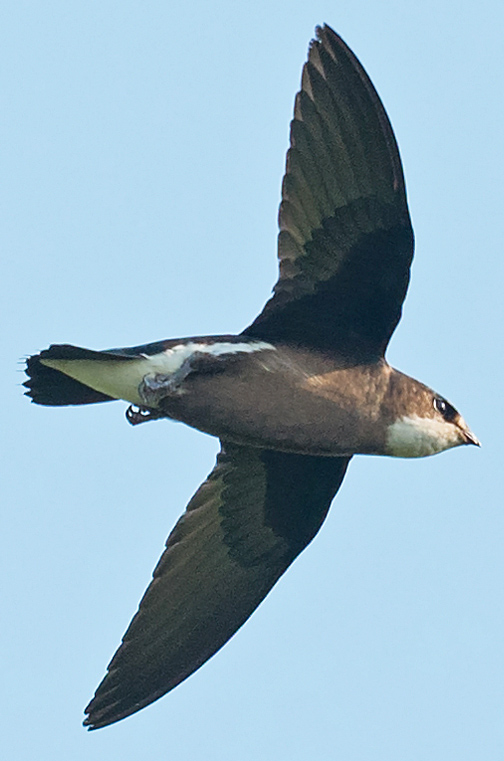
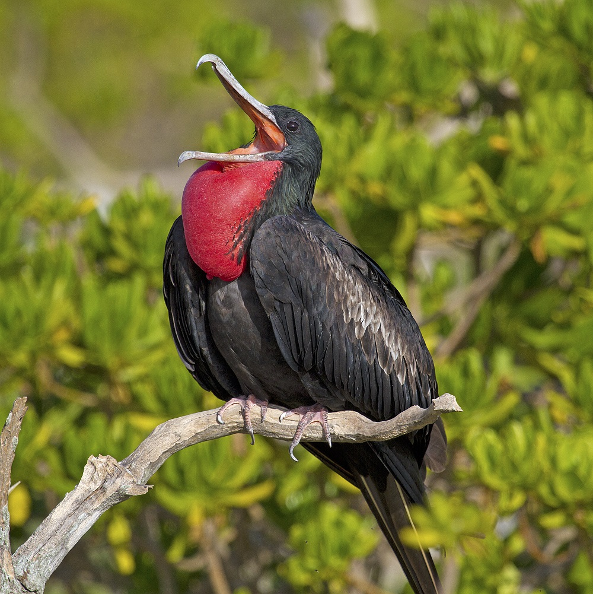
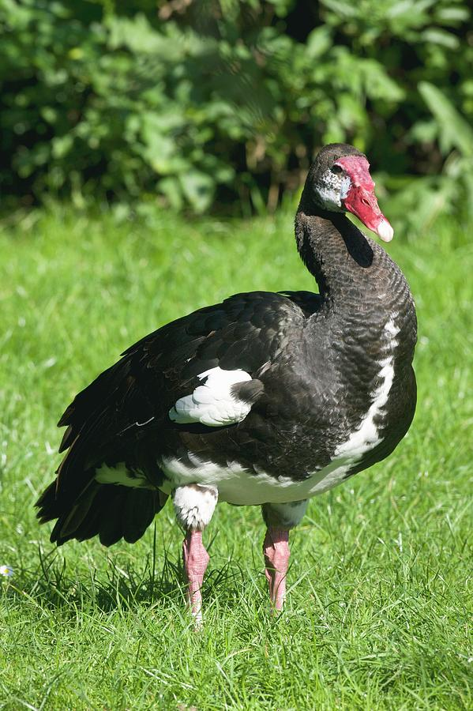
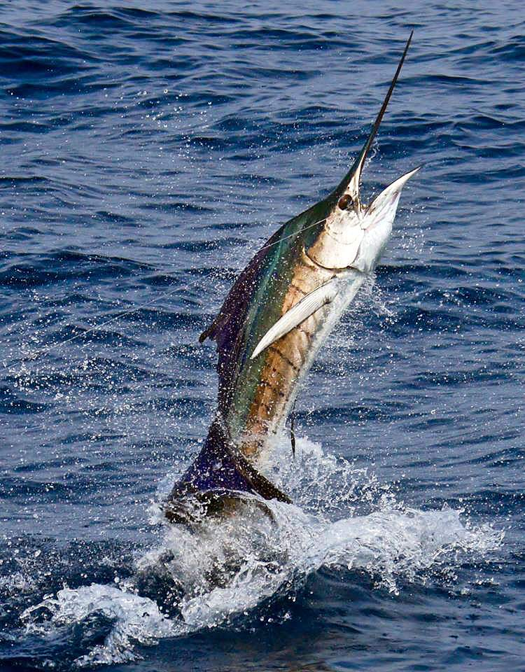
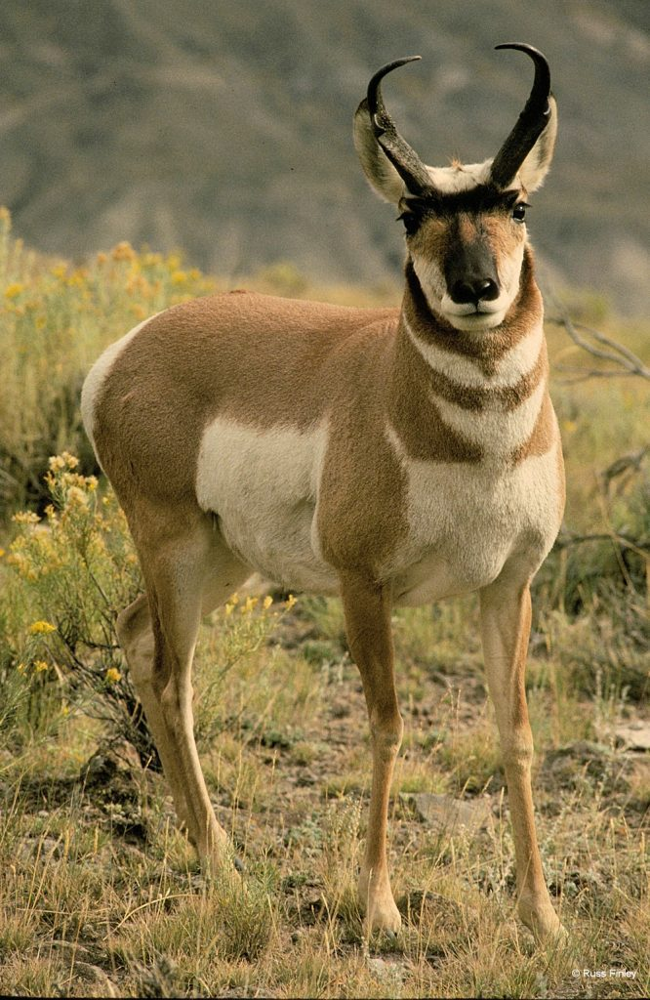
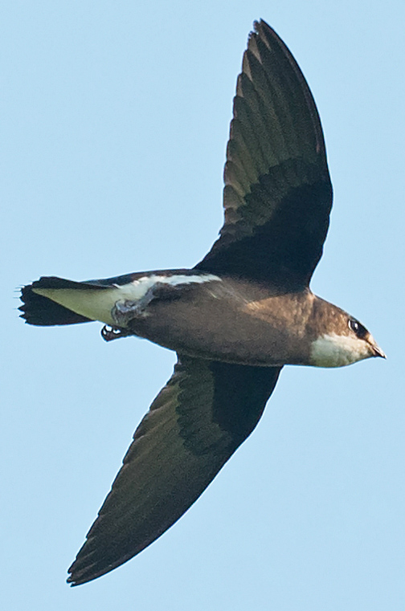
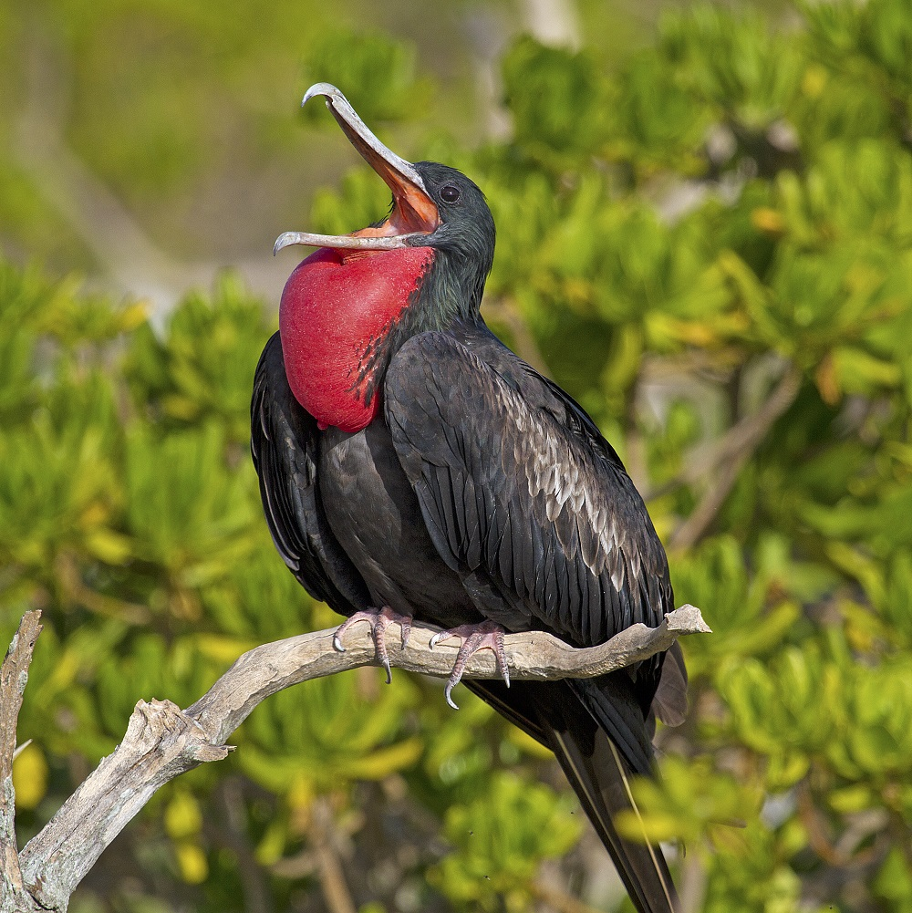
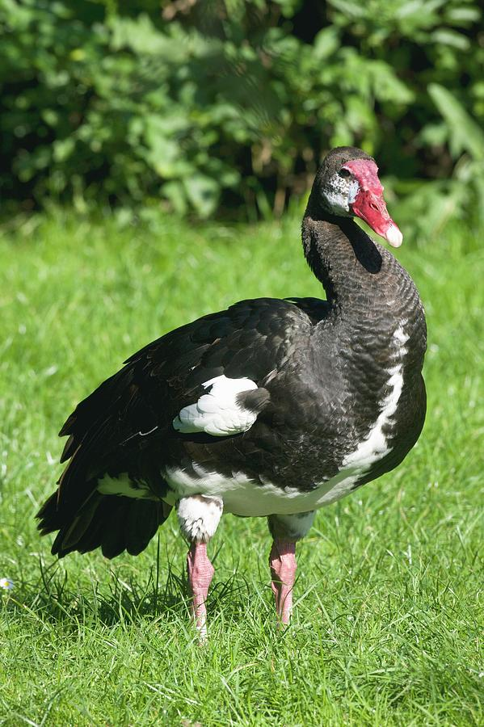
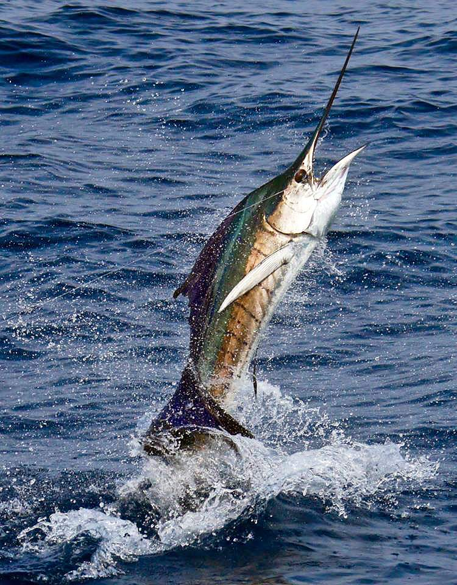
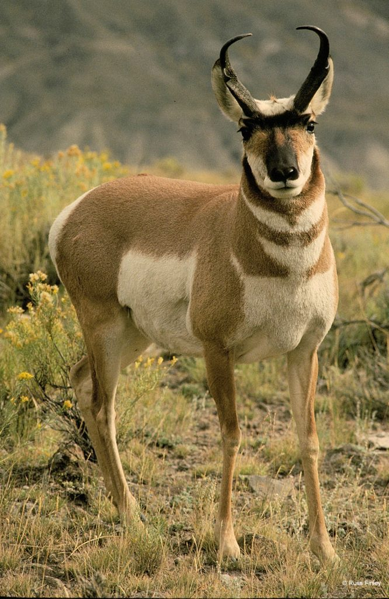

| Rank | Animal | Scientific Name | Speed | Habitat | Diet | Life Expectancy | Interesting facts |
|---|---|---|---|---|---|---|---|
| 1 | Peregrine Falcon
|
Falco Peregrinus | 240 mph (when diving) | Mountains, forests, valleys, and coastlines | Wide variety of birds | 12 to 15 years | Has impeccable eyesight |
| 2 | White Throated Needletail  |
Hirundapus Caudacutus | 106 mph | Mountainous and hilly areas | Flying insects | Up to 10 years | Spends most of their time flying |
| 3 | Frigate Bird  |
Fregatidae | 95 mph | Ocean coasts and islands | Flying fishes | At least 25 to 34 years | Their feathers aren’t waterproof |
| 4 | Spur-Winged Goose  |
Plectropterus gambensis | 88 mph | Open grasslands with lakes | Omnivores | Up to 11 years | The largest waterfowl found in Africa |
| 5 | Cheetah
|
Acinonyx jubatus | 70 mph | Grasslands and savannahs | Fresh meat | 8 to 10 years | Cheetahs are the world's fastest land mammal |
| 6 | Sail Fish  |
Istiophorus | 68 mph | Offshore near coral reefs | Fishes and squids | 13 to 15 years | Fastest fish in the sea |
| 7 | Pronghorn Antelope  |
Antilocapra americana | 60 mph | Open prairie and desert habitats | Mostly shrubs and grasses | 12 to 14 years | Fastest land animal in North America |